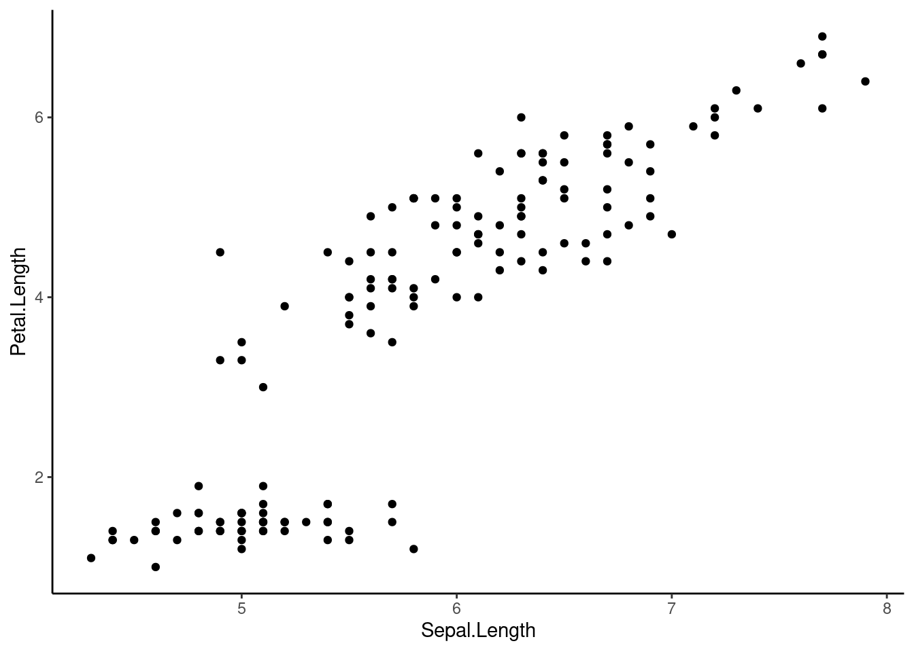
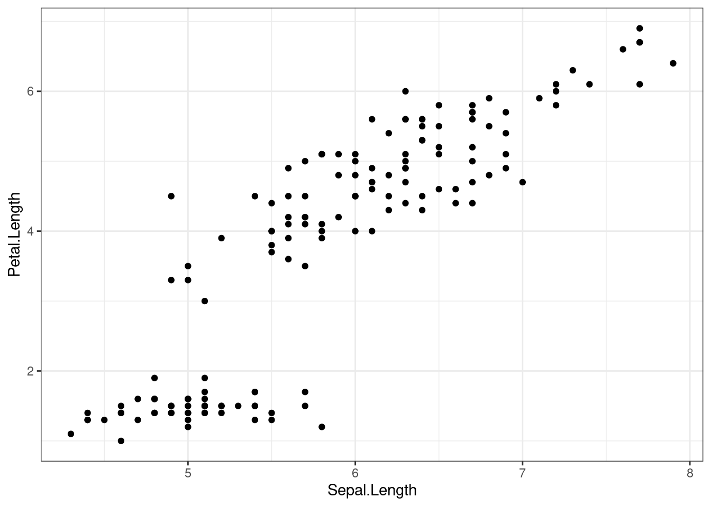
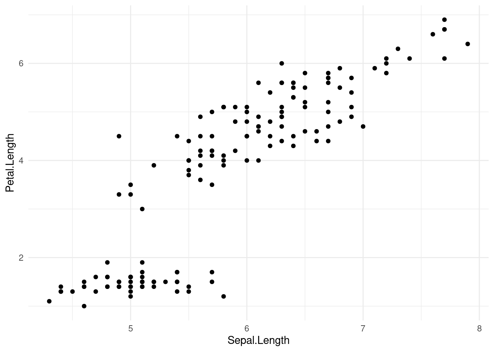

Comprender la lógica detras de la estructura los gráficos con ggplot2
Ser capaz de intregrar en un gŕafico diferentes fuentes de información que representen la complejidad de los datos
ggplot2
Un paquete de R diseñado específicamente para producir gráficos
A diferencia de otros paquetes, ggplot2 tiene su propia gramática
La gramática se basa en la “Gramática de los gráficos” (Wilkinson 2005)
Módulos independientes que pueden combinarse de muchas formas
Esta gramática proporciona una gran flexibilidad
0.1 Gramática de gráficos
La idea principal es empezar con una capa base de datos brutos y luego añadir más capas de anotaciones y resúmenes estadísticos. El paquete nos permite producir gráficos utilizando la misma estructura de pensamiento que utilizamos al diseñar un análisis, reduciendo la distancia de cómo visualizamos un gráfico en la cabeza y el producto final.
Aprender la gramática no sólo es útil para producir un gráfico de interés, sino también para pensar en otros gráficos más complejos. La ventaja de esta gramática es la posibilidad de crear nuevos gráficos compuestos por nuevas combinaciones de elementos.
0.2 Componentes del gráfico
Todos los gráficos ggplot2 contienen los siguientes componentes:
Datos - El objeto R con la información que necesita ser trazada
Capas - Los datos específicos que serán graficados (ej. ‘x’ & ‘y’)
Escala - Rango de datos a incluir
Coordenadas - Sistema de coordenadas (no se utiliza muy a menudo)
Parcelas (facets) - Determina cómo dividir los datos en subparcelas en un multipanel
Tema - Controla el estilo del gráfico
Estos componentes se juntan utilizando “+”.
La sintaxis más habitual incluye los datos dentro de la llamada “ggplot” y una capa “geom_”.
Algunos atributos funcionan mejor con algunos tipos de datos:
Color y forma: variables categóricas
Tamaño: variables continuas
Ejercicio 1
Utilizando el conjunto de datos “hylaeformis”:
Código
# lear desde el sitio del cursohylaeformis_data <-read.csv(paste0("https://raw.githubusercontent.com/maRce10/", "r_avanzado_2023/master/data/hylaeformis_data.csv"))# or bajar manualmente y leer copia localhylaeformis_data <-read.csv("hylaeformis_data.csv", stringsAsFactors =FALSE)head(hylaeformis_data, 20)
1.1 Create a scatter plot of vs “meanfreq” (mean frequency)
1.1 Crear un gráfico de dispersión de duración (“duration”) vs frecuencia promedio (“meanfreq”)
1.2 Añadir un atributo estético para mostrar un color diferente para cada localidad
1.3 Añade otro atributo estético para mostrar el rango de frecuencia dominante (“dfrange”) como tamaño los símbolos
0.5 Gráficos multipanel (Facetting)
Otra forma de visualizar variables categóricas
Permite crear gráficos multipanel para cada nivel de la variable
Además de las funciones básicas (por ejemplo, componentes) descritas anteriormente, ggplot tiene muchas otras herramientas (tanto argumentos como funciones adicionales) para personalizar aún más los gráficos. Prácticamente todo se puede modificar. Aquí vemos algunas de las herramientas más comunes.
0.7.1 Temas
ggplot2 viene con algunos temas por defecto que se pueden aplicar fácilmente para modificar el aspecto de nuestros gráficos:
Código
p <-ggplot(iris, aes(Sepal.Length, Petal.Length)) +geom_point()p +theme_classic()

Código
p +theme_bw()

Código
p +theme_minimal()

La mayoría de los temas difieren en el uso de cuadrículas, líneas de borde y patrones de etiquetado de ejes.
0.7.2 Personalización de ejes
Los límites de los ejes pueden modificarse como sigue:
Consulte la CRAN Graphics Task View para obtener una lista más completa de herramientas gráficas en R.
0.9 References
Lemon J (2006) Plotrix: a package in the red light district of R. R-News 6(4):8–12
Warnes GR, Bolker B, Bonebakker L, Gentleman R, Liaw WHA, Lumley T, Maechler M, Magnusson A, Moeller S, Schwartz M, Venables B (2015) gplots: various R programming tools for plotting data. R package version 2.17.0. https://CRAN.R-project.org/package=gplots
Wickham H (2010) A layered grammar of graphics. J Comput Graph Stat 19(1):3–28
Wilkinson L (2005) The grammar of graphics. Statistics and computing, 2nd edn. Springer, New York
---title: <font size="7"><b>Gráficos con ggplot2</b></font>toc: truetoc-depth: 2toc-location: leftnumber-sections: truehighlight-style: pygmentsformat: html: df-print: kable code-fold: show code-tools: true css: styles.css link-external-icon: false link-external-newwindow: true ---```{=html}<style>body { counter-reset: source-line 0; }pre.numberSource code { counter-reset: none; }</style>``````{r,echo=FALSE,message=FALSE}options("digits"=5)options("digits.secs"=3)# options to customize chunk outputsknitr::opts_chunk$set(class.source ="numberLines lineAnchors", # for code line numbersmessage =FALSE)x <-c("kableExtra", "knitr", "ggplot2", "RColorBrewer", "knitr", "MASS", "viridis")aa <-lapply(x, function(y) {if (!y %in%installed.packages()[, "Package"]) {if (!y %in%c("warbleR", "Rraven")) install.packages(y) else devtools::install_github(paste0("maRce10/", y)) }try(require(y, character.only = T), silent = T)})# ggplot settingsgeom_histogram <-function(...) ggplot2::geom_histogram(..., fill =viridis(10, alpha =0.5)[8], show.legend =FALSE, bins =20, color ="black")geom_smooth <-function(...) ggplot2::geom_smooth(..., color =viridis(10, alpha =0.5)[8])geom_boxplot <-function(...) ggplot2::geom_boxplot(..., fill =viridis(10, alpha =0.5)[7])theme_set(theme_classic(base_size =20))``````{r functions and data, eval=T, echo=F}hylaeformis_data <-read.csv(paste0("https://raw.githubusercontent.com/maRce10/", "r_avanzado_2023/master/data/hylaeformis_data.csv"))```::: {.alert .alert-info}# Objetivos del manual {.unnumbered .unlisted}- Comprender la lógica detras de la estructura los gráficos con ggplot2- Ser capaz de intregrar en un gŕafico diferentes fuentes de información que representen la complejidad de los datos::: <divclass="alert alert-warning">## ggplot2 {.unnumbered .unlisted} - Un paquete de R diseñado específicamente para producir gráficos - A diferencia de otros paquetes, ggplot2 tiene su propia gramática - La gramática se basa en la "Gramática de los gráficos" (Wilkinson 2005) - Módulos independientes que pueden combinarse de muchas formas - Esta gramática proporciona una gran flexibilidad</div> ## Gramática de gráficosLa idea principal es empezar con una capa base de datos brutos y luego añadir más capas de anotaciones y resúmenes estadísticos. El paquete nos permite producir gráficos utilizando la misma estructura de pensamiento que utilizamos al diseñar un análisis, reduciendo la distancia de cómo visualizamos un gráfico en la cabeza y el producto final.Aprender la gramática no sólo es útil para producir un gráfico de interés, sino también para pensar en otros gráficos más complejos. La ventaja de esta gramática es la posibilidad de crear nuevos gráficos compuestos por nuevas combinaciones de elementos. ## Componentes del gráficoTodos los gráficos ggplot2 contienen los siguientes componentes: - **Datos** - El objeto R con la información que necesita ser trazada - **Capas** - Los datos específicos que serán graficados (ej. 'x' & 'y') - **Escala** - Rango de datos a incluir - **Coordenadas** - Sistema de coordenadas (no se utiliza muy a menudo) - **Parcelas (facets)** - Determina cómo dividir los datos en subparcelas en un multipanel - **Tema** - Controla el estilo del gráfico Estos componentes se juntan utilizando "+".La sintaxis más habitual incluye los datos dentro de la llamada "ggplot" y una capa "geom_". Primero instala/carga el paquete:```{r, eval=FALSE}# installinstall.packages("ggplot2")# load librarylibrary(ggplot2)``` ## Gráficos de dispersiónUtilicemos el conjunto de datos "iris" para crear gráficos de dispersión:```{r}ggplot(data = iris, mapping =aes(x = Sepal.Length, y = Petal.Length)) +geom_point()``` This plot is defined by 3 components: 1. "data"- iris 1. "aes" - Sepal.length vs Petal.length 1. "layer" - Points (geom) ## Atributos estéticosTambién podemos añadir otros atributos estéticos como el color, la forma y el tamaño. Estos atributos se pueden incluir dentro de `aes()`:```{r}# color by speciesggplot(data = iris,mapping =aes(x = Sepal.Length, y = Petal.Length, color = Species)) +geom_point()# color and shape by speciesggplot(data = iris,mapping =aes(x = Sepal.Length,y = Petal.Length,color = Species,shape = Species )) +geom_point()``` Tenga en cuenta que los argumentos estéticos también pueden incluirse en la capa "geom":```{r}ggplot(data = iris,mapping =aes(x = Sepal.Length, y = Petal.Length)) +geom_point(aes(color = Species, shape = Species))``` También podemos incluir un valor fijo:```{r}ggplot(data = iris,mapping =aes(x = Sepal.Length, y = Petal.Length)) +geom_point(color ="red2")``` Algunos atributos funcionan mejor con algunos tipos de datos: - Color y forma: variables categóricas - Tamaño: variables continuas </br><divclass="alert alert-info"><fontsize="5">Ejercicio 1</font>Utilizando el conjunto de datos "hylaeformis":```{r, eval=F, echo=T}# lear desde el sitio del cursohylaeformis_data <-read.csv(paste0("https://raw.githubusercontent.com/maRce10/", "r_avanzado_2023/master/data/hylaeformis_data.csv"))# or bajar manualmente y leer copia localhylaeformis_data <-read.csv("hylaeformis_data.csv", stringsAsFactors =FALSE)head(hylaeformis_data, 20)```</br>1.1 Create a scatter plot of vs "meanfreq" (mean frequency)1.1 Crear un gráfico de dispersión de duración ("duration") vs frecuencia promedio ("meanfreq")```{r, eval = FALSE, echo = FALSE}ggplot(data = hylaeformis_data,mapping =aes(x = duration, y = meanfreq)) +geom_point()```</br>1.2 Añadir un atributo estético para mostrar un color diferente para cada localidad```{r, eval = FALSE, echo = FALSE}ggplot(data = hylaeformis_data,mapping =aes(x = duration, y = meanfreq)) +geom_point(aes(color = Locality))```</br>1.3 Añade otro atributo estético para mostrar el rango de frecuencia dominante ("dfrange") como tamaño los símbolos```{r, eval = FALSE, echo = FALSE}ggplot(data = hylaeformis_data,mapping =aes(x = duration, y = meanfreq)) +geom_point(aes(color = Locality, size = dfrange))```</br></div> ## Gráficos multipanel (Facetting) - Otra forma de visualizar variables categóricas - Permite crear gráficos multipanel para cada nivel de la variable - 2 tipos: "grid" & "wrap"```{r}ggplot(iris, aes(Sepal.Length, Petal.Length)) +geom_point() +facet_wrap(~Species)# oggplot(iris, aes(Sepal.Length, Petal.Length)) +geom_point() +facet_grid(~Species)``` La escala puede ser fija o libre para los ejes _x_ e _y_, y puede modificarse el número de columnas y filas:```{r}# free xggplot(iris, aes(Sepal.Length, Petal.Length)) +geom_point() +facet_wrap(~Species, scales ="free_x")``````{r, fig.height=8}# free x and 3 rowsggplot(iris, aes(Sepal.Length, Petal.Length)) +geom_point() +facet_wrap(~Species, scales ="free_y", nrow =3)``````{r, fig.height=6}# both free and 2 rowsggplot(iris, aes(Sepal.Length, Petal.Length)) +geom_point() +facet_wrap(~Species, scales ="free", nrow =2)``` Tenga en cuenta que también podemos guardar el componente básico como un objeto **R** y añadir otros componentes más adelante en el código:```{r, fig.height=8}p <-ggplot(iris, aes(Sepal.Length, Petal.Length)) +geom_point()p +facet_wrap(~Species, scales ="free_x", nrow =3)```## "geoms" adicionales- `geom_smooth()` - añade las líneas de mejor ajuste (incluyendo CI)- `geom_boxplot()` - Distribución de frecuencias - `geom_histogram()` & `geom_freqpoly()` - distribuciones de frecuencia- `geom_bar()` - distribución de frecuencias de variables categóricas- `geom_path()` & `geom_line()` - añade líneas a los gráficos de dispersión ### geom_smooth()Las líneas de regresión de mejor ajuste pueden añadirse con `geom_smooth()`:```{r, fig.height=8}# con CIggplot(iris, aes(Sepal.Length, Petal.Length)) +geom_point() +geom_smooth(method ="lm") +facet_wrap(~Species, scales ="free", nrow =3)# sin CIggplot(iris, aes(Sepal.Length, Petal.Length)) +geom_point() +geom_smooth(method ="lm", se =FALSE) +facet_wrap(~Species, scales ="free", nrow =3)``` <divclass="alert alert-info"><fontsize="5">Ejercicio 2</font>Utilizando el conjunto de datos de ejemplo "msleep":</br>2.1 Crear un gráfico de dispersión de peso corporal ("bodywt") frente a peso cerebral ("brainwt")```{r, eval = FALSE, echo = FALSE}data(msleep)ggplot(data = msleep,mapping =aes(x = bodywt, y = brainwt)) +geom_point()```</br>2.2 Añadir orden ("order") como estética del color```{r, eval = FALSE, echo = FALSE}ggplot(data = msleep,mapping =aes(x = bodywt, y = brainwt, color = order)) +geom_point()```</br>2.3 Añadir un componente "faceta" para dividir los gráficos por orden utilizando escalas libres```{r, eval = FALSE, echo = FALSE}ggplot(data = msleep,mapping =aes(x = bodywt, y = brainwt)) +geom_point() +facet_wrap(~order, scales ="free")```</br>2.4 Elimine los órdenes con menos de 4 especies en el conjunto de datos y haga un gráfico similar al 2.3```{r, eval = FALSE, echo = FALSE}tab <-table(msleep$order)ms2 <- msleep[msleep$order %in%names(tab)[tab >=5], ]ggplot(data = ms2,mapping =aes(x = bodywt, y = brainwt)) +geom_point() +geom_smooth(method ="lm") +facet_wrap(~order, scales ="free")```</br>2.5 Añadir una línea de mejor ajuste a cada gráfico del panel```{r, eval = FALSE, echo = FALSE}ggplot(data = msleep[msleep$order %in%names(tab)[tab >3], ], mapping =aes(x = bodywt, y = brainwt)) +geom_point() +geom_smooth() +facet_wrap(~order, scales ="free")```</br></div>### BoxplotsDe nuevo, sólo se necesita un nuevo componente "geom" para crear un boxplot:```{r}ggplot(iris, aes(Species, Petal.Length)) +geom_boxplot()```Una alternativa interesante son los gráficos de violines:```{r}ggplot(iris, aes(Species, Petal.Length)) +geom_violin()``` ### HistogramasLo mismo ocurre con los histrogramas y los gráficos de frecuencias:```{r}ggplot(iris, aes(Petal.Length)) +geom_histogram()ggplot(iris, aes(Petal.Length)) +geom_freqpoly()ggplot(iris, aes(Petal.Length)) +geom_histogram() +geom_freqpoly()``` Podemos controlar la anchura de las barras:```{r}ggplot(iris, aes(Petal.Length)) +geom_histogram(binwidth =1, fill =adjustcolor("red2", alpha.f =0.3))``` Y compara la distribución de los distintos grupos dentro del mismo histograma:```{r}ggplot(iris, aes(Petal.Length, fill = Species)) +geom_histogram(binwidth =0.4)``` ### Gráfico de barrasMuestran la distribución de variables discretas (categóricas):```{r}tab <-table(msleep$order)df <-as.data.frame(table(msleep$order[msleep$order %in%names(tab)[tab >3]]))ggplot(df, aes(Var1, Freq)) +geom_bar(stat ="identity")``` ```{r, eval=F, echo=F}# Calcular el promedio del # de reclutas por estacióndf2 <-aggregate(RECRUITS ~ SEASON, df, mean)names(df2) <-c("season", "rec")# Gráfico de barrasp <-ggplot(df2, aes(season, rec)) +geom_bar(stat ="identity")p# Cambiar la orientaciónp +coord_flip()### Cambiar el ancho y colores de las barras #### Cambiar el ancho de las barrasggplot(df2, aes(season, rec)) +geom_bar(stat ="identity", width =0.5)ggplot(df2, aes(season, rec)) +geom_bar(stat ="identity", width =0.2)# Cambiar coloresggplot(df2, aes(season, rec)) +geom_bar(stat ="identity", color ="blue", fill ="white")# Remover el tema y agregar barras azulesp <-ggplot(df2, aes(season, rec)) +geom_bar(stat ="identity", fill ="steelblue") +theme_minimal()p# Escoger que barras mostrarp +scale_x_discrete(limits =c("Spring", "Winter"))### Agregar anotaciones ###df2$rec <-round(df2$rec, 1)# Fuera de las barrasggplot(df2, aes(season, rec)) +geom_bar(stat ="identity", fill ="steelblue") +geom_text(aes(label = rec), vjust =-0.3, size =3.5) +theme_minimal()# Dentro de las barrasggplot(df2, aes(season, rec)) +geom_bar(stat ="identity", fill ="yellow") +geom_text(aes(label = rec), vjust =1.6, size =3.5) +theme_minimal()### Cambiar colores de barras por grupo #### Cambiar el color de las líneas externas por grupop <-ggplot(df2, aes(season, rec, color = season)) +geom_bar(stat ="identity", fill ="white")p### Cambiar el color manualmente #### Usar "palette" predefinido de coloresp +scale_color_manual(values =c("red", "blue", "green", "yellow"))# Usar "palette brewer"p +scale_color_brewer(palette ="Dark2")p +scale_color_brewer(palette =1)p +scale_color_brewer(palette =2)# Usar escala de grisesp +scale_color_grey() +theme_classic()### Cambiar colores de relleno de las barras #### Color de rellenop <-ggplot(df2, aes(season, rec, fill = season)) +geom_bar(stat ="identity") +theme_minimal()p### Cambiar el color de relleno manualmente #### Usar "palette" predefinido de coloresp +scale_fill_manual(values =c("red", "blue", "green", "yellow"))# Usar "palette brewer"p +scale_fill_brewer(palette ="Dark2")p +scale_fill_brewer(palette =1)p +scale_fill_brewer(palette =2)# Usar escala de grisesp +scale_fill_grey() +theme_classic()# Usar color negro del borde y rellenoggplot(df2, aes(season, rec, fill = season)) +geom_bar(stat ="identity", color ="black") +scale_fill_manual(values =c("red", "blue", "green", "yellow")) +theme_classic()### Cambiar la posición de la leyenda #### Cambiar el color de las barras a tonos de azúlp <-ggplot(df2, aes(season, rec, fill = season)) +geom_bar(stat ="identity") +theme_minimal()p1 <- p +scale_fill_brewer(palette ="Blues")p1 +theme(legend.position ="top")p1 +theme(legend.position ="bottom")# Remover la leyendap1 +theme(legend.position ="none")### Cambiar el órden de los items en una leyenda #### Cambiar órden de gruposp1 +scale_x_discrete(limits =c("Summer", "Autumn", "Winter", "Spring"))### Editar aún más los elementos de la leyenda #### Cambiar el título de la leyenda y la fuentep1 <-ggplot(df2, aes(season, rec, fill = season)) +geom_bar(stat ="identity", color ="black")titulo <-"Estación"p2 <- p1 +scale_fill_manual(titulo, values =c("red", "blue", "green", "yellow")) +theme_classic()p2 +theme(legend.title =element_text(colour ="blue", size =10,face ="bold"))p2 +theme(legend.text =element_text(colour ="blue", size =10,face ="bold"))# Cambiar el color del fondo de la leyendap2 +theme(legend.background =element_rect(fill ="lightblue",size =0.5, linetype ="solid"))p2 +theme(legend.background =element_rect(fill ="lightblue",size =0.5, linetype ="solid"))### Gráfico de barras con múltiples grupos ###head(df)df.n <-aggregate(RECRUITS ~ SEASON + DENSITY, df, mean)names(df.n) <-c("season", "density", "rec")# Gráfico 1ggplot(df.n, aes(season, rec, fill = density)) +geom_bar(stat ="identity")# Gráfico 2ggplot(df.n, aes(season, rec, fill = density)) +geom_bar(stat ="identity", position =position_dodge())# Cambiar el color manualmentep <-ggplot(df.n, aes(season, rec, fill = density)) +geom_bar(stat ="identity", color ="black", position =position_dodge()) +theme_minimal()p +theme_classic()# Colores manualesp +scale_fill_manual(values =c("#999999", "#E69F00")) +theme_classic()# Palette de coloresp +scale_fill_brewer(palette ="Blues") +theme_classic()### Gráficos de barras con error #### Calcular promedio +/- SDhead(df)df3 <-aggregate(RECRUITS ~ SEASON + DENSITY, df, FUN =function(x) c(mean =mean(x), sd =sd(x)))df4 <-cbind(data.frame(df3[, c(1:2)]), df3$RECRUITS[, 1], df3$RECRUITS[, 2])names(df4) <-c("season", "density", "mean", "sd")str(df4)# Grafico de barras y desviación estándarp <-ggplot(df4, aes(season, mean, fill = density)) +geom_bar(stat ="identity", position =position_dodge(), color ="black") +geom_errorbar(aes(ymin = mean, ymax = mean + sd),width =0.2,position =position_dodge(0.9) )p +scale_fill_brewer(palette ="Paired") +theme_minimal()p +scale_fill_brewer(palette ="Paired") +theme_classic()### Personalizar aún más los gráficos #### Poner títulos de ejesp +xlab("Estación") +ylab("Número de reclutas") +theme_classic()# Remover títulos de ejesp +xlab(NULL) +ylab(NULL) +theme_classic()# Otros cambiosp2 <- p +labs(x ="Estación", y ="Número de reclutas") +scale_fill_manual(values =c("black", "grey50")) +theme_classic()p2# Cambiar los límites X y Yp2 +ylim(0, 100)# Cambiar límites con expand_limitsp2 +expand_limits(x =c(0, 6), y =c(0, 80))```## Personalización de ggplotsAdemás de las funciones básicas (por ejemplo, componentes) descritas anteriormente, ggplot tiene muchas otras herramientas (tanto argumentos como funciones adicionales) para personalizar aún más los gráficos. Prácticamente todo se puede modificar. Aquí vemos algunas de las herramientas más comunes. ### Temasggplot2 viene con algunos temas por defecto que se pueden aplicar fácilmente para modificar el aspecto de nuestros gráficos:```{r}p <-ggplot(iris, aes(Sepal.Length, Petal.Length)) +geom_point()p +theme_classic()p +theme_bw()p +theme_minimal()``` La mayoría de los temas difieren en el uso de cuadrículas, líneas de borde y patrones de etiquetado de ejes. ### Personalización de ejesLos límites de los ejes pueden modificarse como sigue:```{r}ggplot(iris, aes(Sepal.Length, Petal.Length)) +geom_point() +xlim(c(0, 10))ggplot(iris, aes(Sepal.Length, Petal.Length, col = Species)) +geom_point() +xlim(c(0, 10)) +ylim(c(0, 9))``` Los ejes también pueden transformarse:```{r}ggplot(iris, aes(Sepal.Length, Petal.Length, col = Species)) +geom_point() +scale_x_continuous(trans ="log") +scale_y_continuous(trans ="log2")``` o invertidos:```{r}ggplot(iris, aes(Sepal.Length, Petal.Length, col = Species)) +geom_point() +scale_y_reverse()```### Guardar ggplotsLos ggplots pueden exportarse como archivos de imagen utilizando la función `ggsave`:```{r}ggplot(data = msleep[msleep$order %in%names(tab)[tab >5], ],mapping =aes(x = bodywt, y = brainwt)) +geom_point() +facet_wrap(~order, scales ="free")# Exportggsave("plot.png", width =5, height =5)``` El tipo de archivo de imagen se identificará por la extensión en el nombre del archivo Personalización adicional del eje:```{r}# Log2 scaling of the y axis (with visually-equal spacing)require(scales)p +scale_y_continuous(trans =log2_trans())# show exponentsp +scale_y_continuous(trans =log2_trans(),breaks =trans_breaks("log2", function(x) 2^x),labels =trans_format("log2", math_format(2^.x)))# Percentp +scale_y_continuous(labels = percent)# dollarp +scale_y_continuous(labels = dollar)# scientificp +scale_y_continuous(labels = scientific)### Agregar "tick marks" #### Cargar libreríaslibrary(MASS)data(Animals)# x and y axis are transformed and formattedp2 <-ggplot(Animals, aes(x = body, y = brain)) +geom_point(size =4) +scale_x_log10(breaks =trans_breaks("log10", function(x) 10^x),labels =trans_format("log10", math_format(10^.x)) ) +scale_y_log10(breaks =trans_breaks("log10", function(x) 10^x),labels =trans_format("log10", math_format(10^.x)) ) +theme_bw()# log-log plot without log tick marksp2# Show log tick marksp2 +annotation_logticks()# # Log ticks on left and rightp2 +annotation_logticks(sides ="lr")# All sidesp2 +annotation_logticks(sides ="trbl")``` ### Otros gráficos Se pueden generar muchos otros tipos de gráficos. Aquí muestro un ejemplo de gráficos de contorno y de "mapa de calor":```{r}head(faithful)ggplot(faithfuld, aes(eruptions, waiting)) +geom_contour(aes(z = density, colour =after_stat(level)))ggplot(faithfuld, aes(eruptions, waiting)) +geom_raster(aes(fill = density))``` ## Otros paquetes de gráficos en R- **ggvis** (ggplots interactivos)- **vcd** (Warnes 2015)- **plotrix** (Lemon et al. 2006)- **gplots** (Warnes 2015)Consulte la [CRAN Graphics Task View](http://cran.r-project.org/web/views/Graphics.html) para obtener una lista más completa de herramientas gráficas en **R**.--- ## References - Lemon J (2006) Plotrix: a package in the red light district of R. R-News6(4):8–12- Warnes GR, Bolker B, Bonebakker L, Gentleman R, Liaw WHA, LumleyT, Maechler M, Magnusson A, Moeller S, Schwartz M, Venables B (2015) gplots: various R programming tools for plotting data. R package version 2.17.0. https://CRAN.R-project.org/package=gplots- Wickham H (2010) A layered grammar of graphics. J Comput Graph Stat 19(1):3–28- Wilkinson L (2005) The grammar of graphics. Statistics and computing, 2nd edn. Springer, New York------<fontsize="4">Información de la sesión</font>```{r session info, echo=F}sessionInfo()```